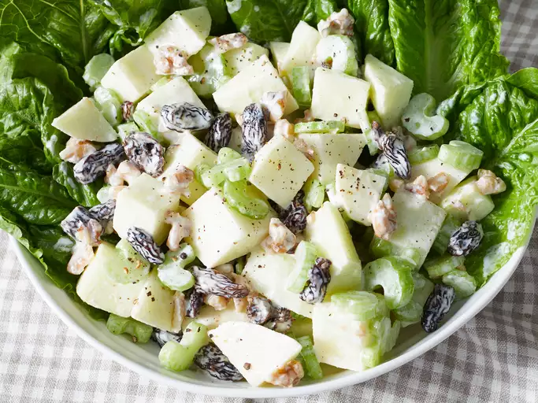

Waldorf Salad
Odin Recipes

Description
A Waldorf salad is a fruit and nut salad that features a mayonnaise dressing. It was created in 1896 by Oscar Tschirky, the maître d'hôtel at New York’s Waldorf-Astoria. It doesn’t traditionally contain meat, but chicken is often added to make it a complete meal.
Waldorf Salad Ingredients
These are the simple ingredients you’ll need to make this restaurant-worthy Waldorf salad recipe at home:
- For the dressing: mayonnaise, white sugar, lemon juice, and salt
- For the salad: apples, celery, walnuts, and (optional) raisins
Steps
- Gather all ingredients
- Whisk mayonnaise, sugar, lemon juice, and salt together in a serving bowl
- Stir in apples, celery, walnuts, and raisins. Cover and chill in the refrigerator until ready to serve